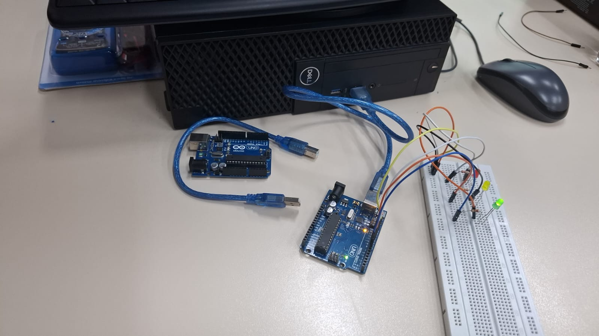
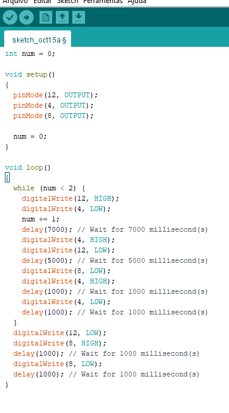

Página principal
principal
timkercad
Arduíno
semaforo duplo
arduíno na prática
crescente
decrescente
decrescente
Arduíno na prática
SEMAFORO SIMPLES

vídeo da montagem prática
print do código C++ da IDE ARDUÍNO (imagem)

Código C++ (Texto)
int num = 0;
void setup()
{
pinMode(12, OUTPUT);
pinMode(4, OUTPUT);
pinMode(8, OUTPUT);
num = 0;
}
void loop()
{
while (num < 2) {
digitalWrite(12, HIGH);
digitalWrite(4, LOW);
num += 1;
delay(7000); // Wait for 7000 millisecond(s)
digitalWrite(4, HIGH);
digitalWrite(12, LOW);
delay(5000); // Wait for 5000 millisecond(s)
digitalWrite(8, LOW);
digitalWrite(4, HIGH);
delay(1000); // Wait for 1000 millisecond(s)
digitalWrite(4, LOW);
delay(1000); // Wait for 1000 millisecond(s)
}
digitalWrite(12, LOW);
digitalWrite(8, HIGH);
delay(1000); // Wait for 1000 millisecond(s)
digitalWrite(8, LOW);
delay(1000); // Wait for 1000 millisecond(s)
}